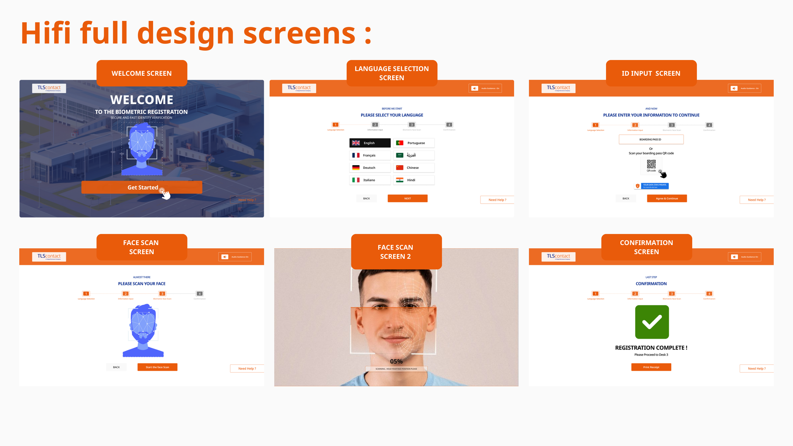
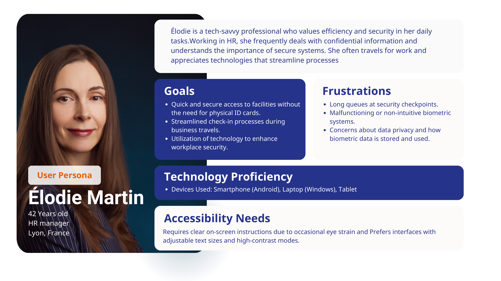
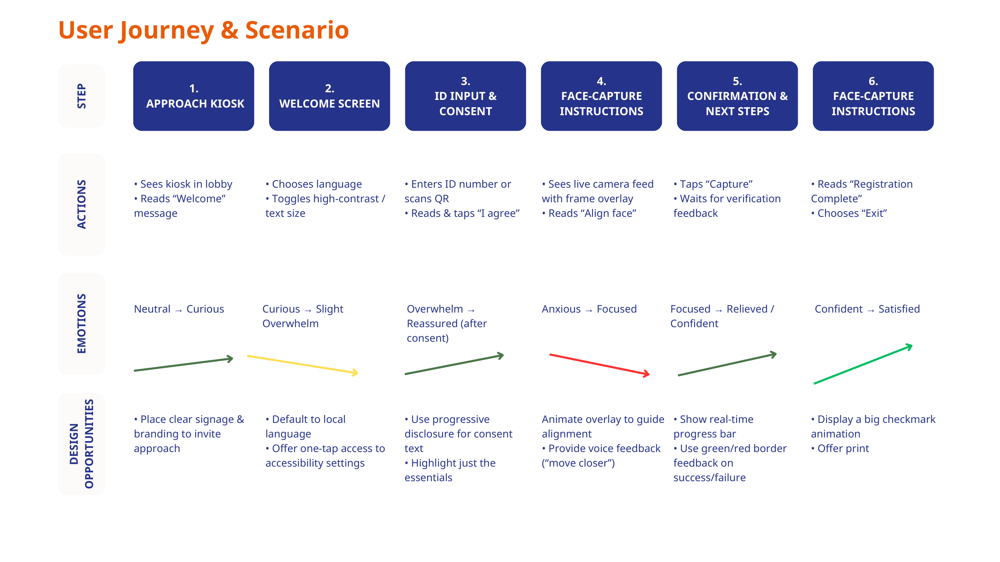
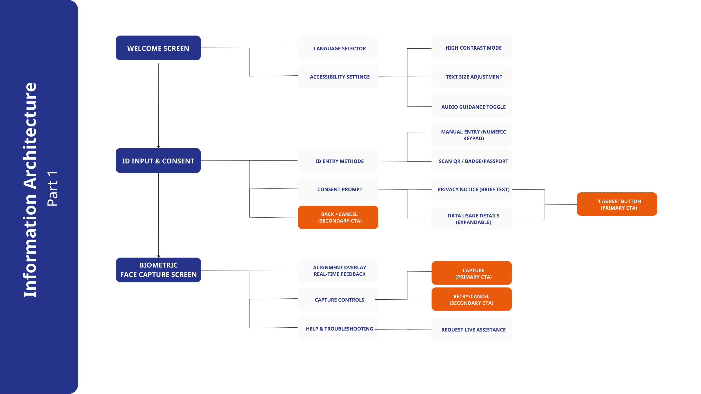
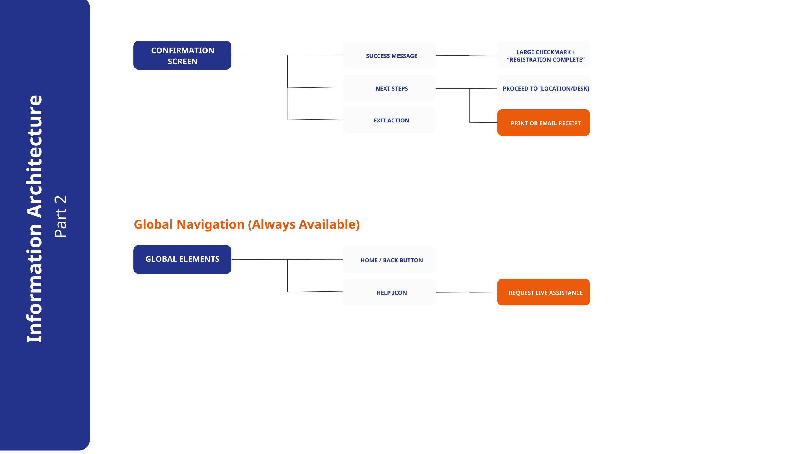
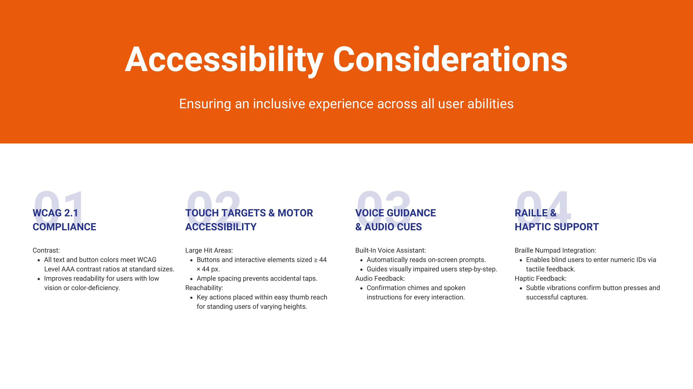
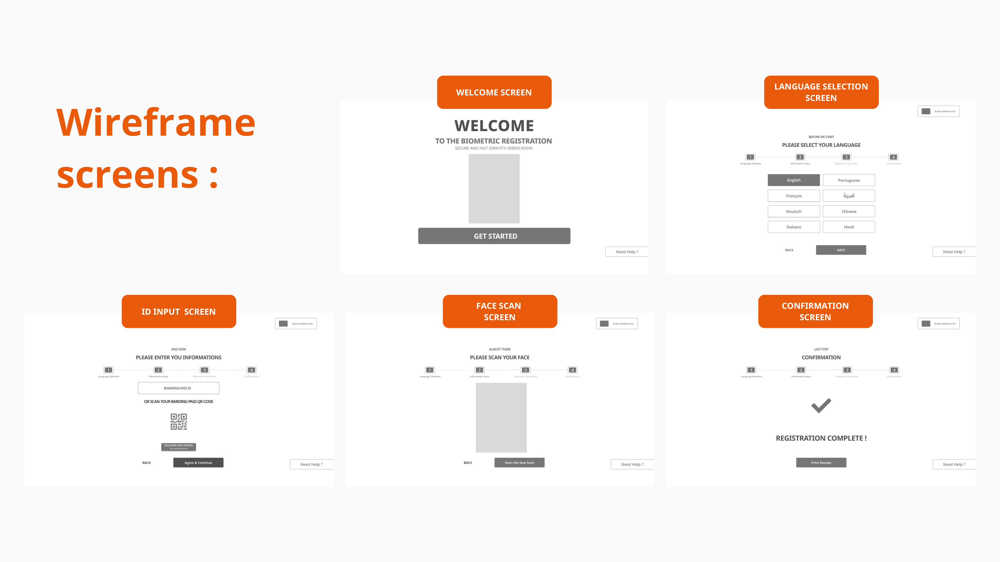
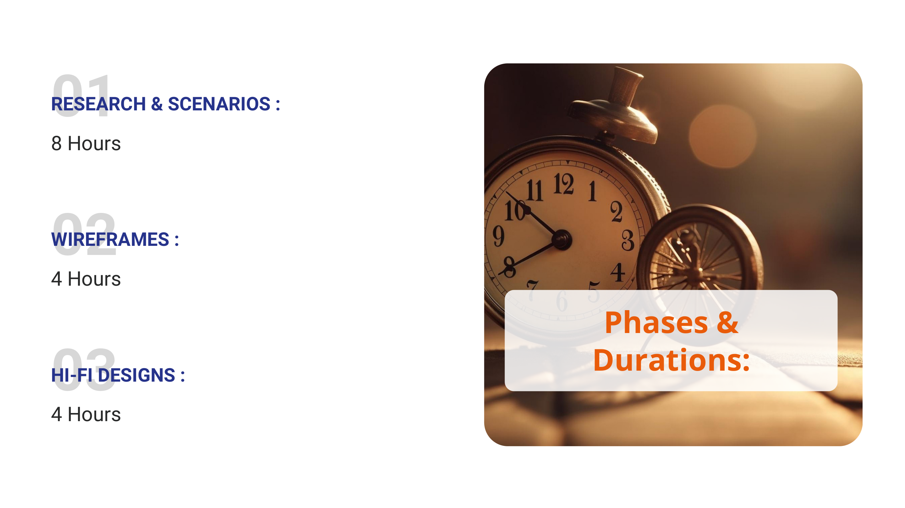

Case study
TLSContact
Designing a biometric kiosk experience that feels guided, calm, and accessible in high-stakes service environments.
What started as a TLS kiosk design test became a full service-UX case study. I used the brief to define the operating context, shape a realistic target user, map the emotional journey, build the kiosk information architecture, and translate accessibility requirements into a biometric capture flow that could actually support first-time users under pressure.

Why this project mattered
Biometric kiosks sit at the intersection of service operations, trust, and hardware UX. Users are not casually browsing. They are standing in a formal environment, often time-sensitive, often uncertain about what happens to their data, and trying to complete a task that feels procedural and sensitive at the same time.
That means the interface has to do more than display steps. It has to make the machine feel understandable, guide physical behavior at the right moment, surface accessibility controls without stigma, and confirm progress clearly enough that users stay confident from entry to completion.
From a product perspective, better kiosk UX is not cosmetic. It lowers hesitation, reduces avoidable staff support, improves throughput, and makes the service feel more reliable and more scalable across locations.
Role & scope
What I owned
A kiosk project where product clarity, accessibility, and operational realism had to work together.
I treated the brief like a product and service design problem rather than a simple interface exercise. The work covered user framing, service states, system structure, accessibility logic, step-by-step guidance, and the visual decisions needed to make a biometric interaction feel secure but still approachable.
End-to-end kiosk UX concept
Defined the welcome flow, language selector, accessibility panel, ID entry, consent model, face-capture guidance, confirmation state, and always-available help/navigation elements.
Persona, scenario, and emotional journey
Built a user model around a realistic traveler profile, then mapped the step-by-step emotional arc to reveal when reassurance, progressive disclosure, or stronger feedback would matter most.
Service structure before screen polish
Mapped the kiosk information architecture first so the system could support global controls, recovery paths, capture logic, and next-step messaging without becoming an opaque sequence of isolated screens.
Inclusive design as a core product layer
Integrated contrast, larger hit targets, text-size controls, audio guidance, and tactile support ideas into the main flow, treating accessibility as central to service success rather than an optional enhancement.
Self-service built around reduced assistance dependency
Focused on how the kiosk could reduce confusion and support requests while still making users feel informed and respected during a high-trust biometric interaction.
What makes this more than UI
A kiosk is part product, part environment, part service choreography. Unlike a web page, it has to anticipate how a person will approach the machine, what they might be worried about, what physical action they need to take next, and how the system should respond if they hesitate or make a mistake.
What I was optimizing for
The goal was not just visual clarity. It was a calmer interaction model: one that helps people understand what the kiosk needs from them, why it needs it, and what successful completion looks like before uncertainty turns into friction.
Challenge
Human + service risk
The real challenge was helping users perform the right physical action while still feeling safe, informed, and in control.
In a biometric kiosk, every moment has two layers: the user has to understand the digital instruction, and then they have to translate it into the correct physical action in front of the device. That means hierarchy, overlays, states, motion, feedback, and recovery all become part of the service logic.

What the persona clarified
Elodie Martin is not a low-confidence user. She is tech-savvy, frequently handles confidential information, and values efficiency. But even she needs reassurance, readable text, and a trustworthy system when biometric data is involved. That is a useful product signal: if a confident professional still needs clarity and adjustable accessibility, the interface cannot rely on implicit understanding.
The persona also surfaces the real service tension: people want speed and security at the same time. Good kiosk UX has to satisfy both, not trade one off against the other.
The journey map is the strongest evidence in the case because it shows that users do not move through the experience in a flat emotional state. Curiosity quickly turns into overwhelm, then reassurance, then anxiety during capture, then relief at confirmation. The interface needs to guide that arc deliberately.
Approach starts before touch
Clear signage, obvious branding, and an understandable welcome state make the kiosk feel invitational instead of procedural and cold.
Entry
Consent needs progressive disclosure
Privacy text should not flood the screen. Essentials come first, with expandable detail, so trust-critical information is available without causing immediate overload.
Trust
Capture is a guided interaction, not a camera screen
Face framing overlays, proximity instructions, real-time feedback, and success/failure states all need to actively coach the user through the hardest moment.
Core step
Confirmation must close the loop confidently
A large success signal, clear next steps, and optional receipt or exit actions reduce doubt and stop users from wondering whether they are actually done.
Closure

User problem
People need orientation, visible accessibility controls, and confidence about what the system is doing with their data. They should not have to decode a public machine while worrying about queues, privacy, or making a mistake in front of others.
Service problem
The service needs standardized completion with less intervention from staff. Better UX here directly supports smoother throughput, clearer support boundaries, and more consistent outcomes across locations.
Product problem
The product has to act like a calm facilitator. If the UI feels technical or unstable, the service loses trust immediately, even if the underlying capture technology is sound.
Process
Architecture to hi-fi
The process moved from service architecture into inclusive interface behavior, then into high-fidelity visual guidance.
The value of the deck is its sequence. It does not jump straight into UI polish. It starts with problem framing and journey logic, defines the system architecture, documents accessibility decisions, validates the flow in wireframes, and only then moves into polished kiosk screens. That is exactly how a product-facing UX process should work on a high-trust service.
Defined service states before visual styling
Mapped welcome, language choice, accessibility settings, ID entry, consent, capture, troubleshooting, confirmation, and exit so the kiosk could behave like one coherent system.
Made accessibility part of the architecture
High contrast, text size controls, audio guidance, larger targets, braille-compatible keypad thinking, and haptic feedback cues were planned into the product structure rather than layered on afterwards.
Used low fidelity to validate sequencing and control
The wireframes focus on the moments that matter most: welcome, language, ID input, capture, and confirmation. That keeps decision-making focused on usability before aesthetics take over.
Translated system logic into calmer visual states
The hi-fi stage strengthens visual guidance through clearer hierarchy, more confident action buttons, explicit overlays, and less ambiguous confirmation feedback.
Kept the concept production-minded
The timeline shows a practical cadence: 8 hours for research and scenarios, 4 hours for wireframes, and 4 hours for hi-fi. That reflects a focused concept sprint rather than a vague speculative exercise.




Why the IA is central
In a kiosk, information architecture is not just site structure. It is the mental model of the whole service. Users cannot casually browse or recover the way they might on desktop. The next step must always be explicit, finite, and physically actionable. That is why the IA work matters so much here.
Why the accessibility board elevates the project
The accessibility page turns values into requirements. WCAG AAA contrast, 44x44 touch targets, voice guidance, spoken confirmations, braille keypad support, and haptic feedback are all described as interface behaviors. That makes the work feel product-ready instead of aspirational.

What I would validate next
If this moved into production, the next step would be scenario-based testing with users of different ages, language preferences, and accessibility needs. I would specifically validate language switching discoverability, confidence during consent, clarity of face-capture feedback, and the effectiveness of recovery states when capture fails.
How this connects to product delivery
For a service like TLS, the kiosk is only one part of the experience, but it can become the point where trust is either reinforced or lost. That makes its UX a cross-functional asset: part customer experience, part operational tooling, and part service-standardization mechanism.
Outcome
UX and service value
The concept demonstrates how kiosk UX can feel more humane, more predictable, and more operationally useful at the same time.
Even as a concept case, the project shows a strong product principle: calm self-service comes from structured guidance. By reducing ambiguity and making support features visible, the kiosk becomes easier to trust for users and easier to scale for the service.
UX outcome
The experience becomes easier to approach, easier to read, and less intimidating for first-time users. Language choice, privacy reassurance, capture guidance, and confirmation all become discrete trust moments instead of getting buried inside one technical sequence.
The interface also gives stronger physical direction. Overlays, progress signals, voice guidance opportunities, and clear next-step messaging make the machine feel more supportive and less opaque.
Service outcome
For the service model, the concept points toward shorter assistance loops, stronger consistency across centres, and less friction in routine onboarding tasks. More importantly, it establishes a reusable interaction pattern for sensitive self-service steps that could support future kiosk deployments.
That is where the work becomes product-oriented: good kiosk UX improves confidence, standardization, throughput, and trust in the system itself.
Hardware UX is service choreography
The interface, the device, the user’s posture, and the service environment all have to align. The best kiosk experience is the one that makes the next physical action feel obvious, safe, and calm.
Accessibility improves operations, not just inclusion
Visible accessibility settings, readable contrast, and clearer control sizing help more than edge-case users. They make the whole service easier to understand, which reduces hesitation and support demand.
Trust should be designed at every state change
Consent, live capture feedback, and completion messaging are not decorative moments. They are the points where the service either gains or loses user confidence.